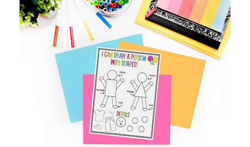
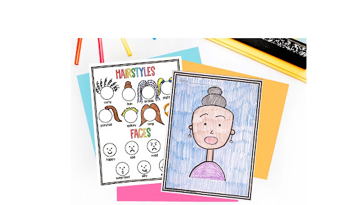
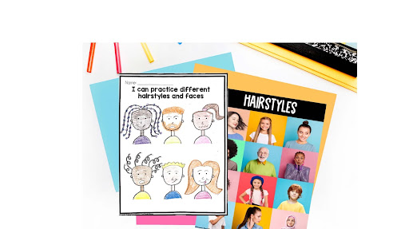

How I teach my Illustration Unit
May 9, 2022
Do your students get stuck on how to draw something during Writers Workshop? Or even worse, still draw that basic potato person with absolutely no details? You know what I am talking about, like this one:
What if I told you if you set up your writers workshop correctly it will be not only YOUR favorite time or the day, but your students’ too! Sounds too good to be true? I promise if you start with my Illustration Unit, you will wonder how you ever taught writing without it.
For the first month of school, we are going to focus on SHAPES. Drawing can sound daunting but when you think of pictures with shapes ONLY it makes it so much easier.
We start our unit by manipulating shapes into people and then we learn how to draw a person with directed drawings with simple shapes.

From there, we focus on skin tones, hairstyles and faces. This is a crucial step in the unit for students to realize we are all uniquely different so we need to make sure our characters in our stories are different too! I use crayola skin tone crayons (link this for affiliate amazon link) so each student can find the exact color to represent themselves.

By focusing on hairstyles and facial expressions, we are modeling to students that not every person has to have long/short hair with a smiley face. Humans have emotions and our characters in our stories will have emotions too!

After we have mastered how to draw detailed characters, we move onto setting! Students get to practice drawing everyday settings/objects with shapes ONLY that typical five year olds write about: the park, their house, a car, a boat, a dog, etc.
Now that we have learned how to draw characters and setting, we are ready to create our first story with characters AND setting. We learn how to separate our picture with a big line to allow us to fill up the ENTIRE space with additional details to our story.
To celebrate our first ever published illustration, we create hats and share our stories with our friends. Are you ready to have your students become masters in illustrations too? Here is my 4 week unit to get your writers workshop off on the right foot!
© That Kinder Mama 2021